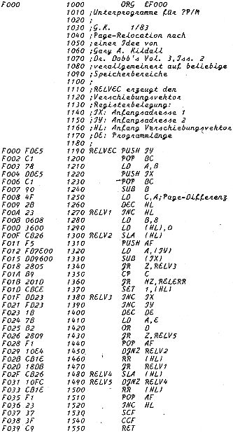

80-Bus Journal |
Januar 1983 · Ausgabe 1 |
verbannen!) Relocator-Programme haben wir schon im Nascom-Journal 6/81 veröffentlicht. Beide Programme hatten den Nachteil, daß der verschiebliche Code „von Hand“ erzeugt werden mußte. Das von Gary Kildall verwendete Verfahren hat den großen Vorteil, daß dieser Code von einem Programm erzeugt wird. Voraussetzung ist, daß ein Programm in zwei Versionen vorliegt, die sich nur im Speicherbereich unterscheiden, in dem sie lauffähig sind. Dieser Unterschied darf keinen „krummen Wert“ annehmen, sondern muß stets das Vielfache einer „ganzen PAGE“ (=100H) betragen. Immer dann, wann ein Programm im Assembler-Quellcode vorliegt, kann man auf einfache Weise zwei solche Programmversionen erzeugen (durch entsprechende „ORG“-Vorgaben). NASDIS habe ich hingegen erst in ein ZEAP-Format disassemblieren und editieren müssen, bevor diese Bedingung erfüllt war. Das Verfahren ist im Grunde sehr einfach. Die Routine RELVEC vergleicht die beiden Programmversionen Byte für Byte und erzeugt einen „Verschiebungsvektor“, in dem für jedes Byte des Programms ein Bit vorgesehen ist. Wird ein Unterschied festgestellt, wird das entsprechende Bit gesetzt, sonst nicht. Der Unterschied muß immer gleich dem „Page-Unterschied“ sein, sonst erfolgt eine Fehlermeldung. Der Verschiebungsvektor zu einem Programm kann dann separat gespeichert und bei Bedarf geladen werden. Die Routine RELOC verrechnet dann diesen Verschiebungsvektor mit einer beliebigen Version des Programms und verändert es dabei so, daß es an einer vorgewählten Adresse lauf fähig wird. (Die Verschiebung muß man dann mit dem Copy-Befehl vornehmeen!) Das Programm muß nicht an einer Stelle stehen, wo es auch lauffähig ist. Es muß nur eine Bedingung erfüllt sein: Der Abstand der zwei Programmversionen muß gleich dem Unterschied in „Pages“ sein. Alles weitere kann man wohl dem Assemblerlisting entnehmen.
(wird fortgesetzt)
| CP/M-I/O-Funktionen | |
|---|---|
| Nr. | Bedeutung |
| 0 | System rücksetzen |
| 1 | Konsolen-Eingabe |
| 2 | Konsolen-Ausgabe |
| 3 | Leser-Eingabe |
| 4 | Stanzer-Ausgabe |
| 5 | Drucker-Ausgabe |
| 6 | Dirkte Konsolen Ein/Ausgabe (s.u.) |
| 7 | IOBYTE holen |
| 8 | IOBYTE setzen |
| 9 | Buffer drucken bis „$“ |
| 10 | Buffer von Konsole füllen |
| 11 | A=FFH falls Konsoleingabe, sonst=0 |
Einzelzeichen werden für die Ausgabe immer in E übergeben, Pointer (Nr. 9 und 10) in DE
Eingaben erfolgen immer über A, ebenso das IOBYTE
Zu 6: bei Aufruf in E=FFH oder Zeichen, bei Rückkehr in A Zeichen oder 0

| Seite 26 von 28 |
|---|